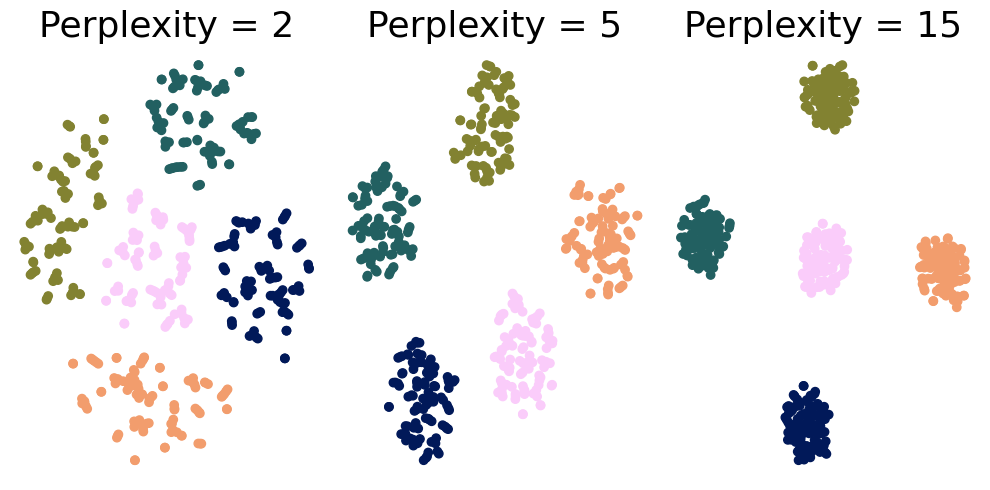
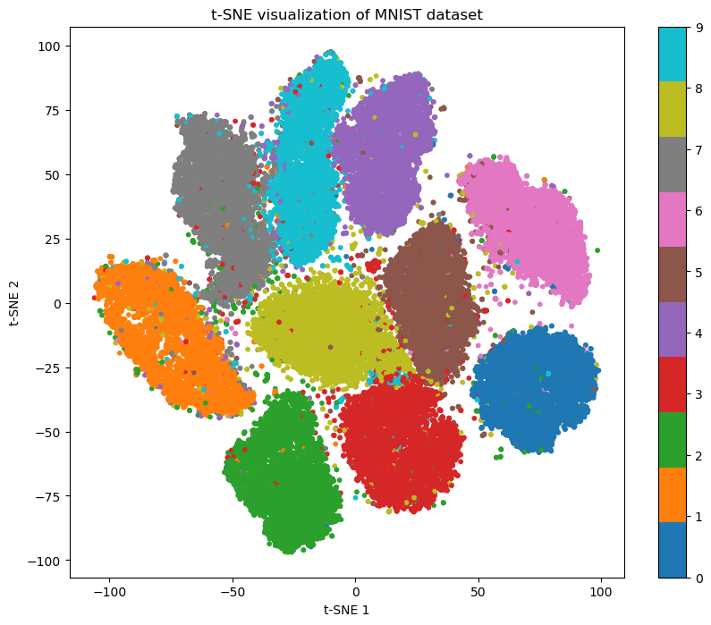

import pandas as pd
from PIL import Image
import numpy as np
import tifffile as tiff
import os
import glob
from tqdm import tqdm
from cmcrameri import cm
# Load the metadata CSV file
metadata_path = '/Users/laura/projects/Bio-image_analysis_school_ScadsAI/data/BBBC021_v1_image.csv'
metadata_df = pd.read_csv(metadata_path)
metadata_df
| TableNumber | ImageNumber | Image_FileName_DAPI | Image_PathName_DAPI | Image_FileName_Tubulin | Image_PathName_Tubulin | Image_FileName_Actin | Image_PathName_Actin | Image_Metadata_Plate_DAPI | Image_Metadata_Well_DAPI | Replicate | Image_Metadata_Compound | Image_Metadata_Concentration | |
|---|---|---|---|---|---|---|---|---|---|---|---|---|---|
| 0 | 4 | 233 | G10_s1_w1BEDC2073-A983-4B98-95E9-84466707A25D.tif | Week4/Week4_27481 | G10_s1_w2DCEC82F3-05F7-4F2F-B779-C5DF9698141E.tif | Week4/Week4_27481 | G10_s1_w43CD51CBC-2370-471F-BA01-EE250B14B3C8.tif | Week4/Week4_27481 | Week4_27481 | G10 | 1 | 5-fluorouracil | 0.003 |
| 1 | 4 | 234 | G10_s2_w11C3B9BCC-E48F-4C2F-9D31-8F46D8B5B972.tif | Week4/Week4_27481 | G10_s2_w2570437EF-C8DC-4074-8D63-7FA3A7271FEE.tif | Week4/Week4_27481 | G10_s2_w400B21F33-BDAB-4363-92C2-F4FB7545F08C.tif | Week4/Week4_27481 | Week4_27481 | G10 | 1 | 5-fluorouracil | 0.003 |
| 2 | 4 | 235 | G10_s3_w1F4FCE330-C71C-4CA3-9815-EAF9B9876EB5.tif | Week4/Week4_27481 | G10_s3_w2194A9AC7-369B-4D84-99C0-DA809B0042B8.tif | Week4/Week4_27481 | G10_s3_w4E0452054-9FC1-41AB-8C5B-D0ACD058991F.tif | Week4/Week4_27481 | Week4_27481 | G10 | 1 | 5-fluorouracil | 0.003 |
| 3 | 4 | 236 | G10_s4_w1747818B4-FFA7-40EE-B0A0-6A5974AF2644.tif | Week4/Week4_27481 | G10_s4_w298D4652F-B5BF-49F2-BE51-8149DF83EAFD.tif | Week4/Week4_27481 | G10_s4_w42648D36D-6B77-41CD-B520-6E4C533D9ABC.tif | Week4/Week4_27481 | Week4_27481 | G10 | 1 | 5-fluorouracil | 0.003 |
| 4 | 4 | 473 | G10_s1_w10034568D-CC12-43C3-93A9-DC3782099DD3.tif | Week4/Week4_27521 | G10_s1_w2A29ED14B-952C-4BA1-89B9-4F92B6DADEB4.tif | Week4/Week4_27521 | G10_s1_w4DAA2E9D1-F6E9-45FA-ADC0-D341B647A680.tif | Week4/Week4_27521 | Week4_27521 | G10 | 2 | 5-fluorouracil | 0.003 |
| ... | ... | ... | ... | ... | ... | ... | ... | ... | ... | ... | ... | ... | ... |
| 13195 | 9 | 3560 | Week9_090907_F11_s4_w19580FF4D-DC3D-4BD0-93FE-... | Week9/Week9_39301 | Week9_090907_F11_s4_w2DC65EC6F-BDCA-4B05-B243-... | Week9/Week9_39301 | Week9_090907_F11_s4_w45699A0F4-9AEE-4CD4-8973-... | Week9/Week9_39301 | Week9_39301 | F11 | 3 | DMSO | 0.000 |
| 13196 | 9 | 3597 | Week9_090907_G11_s1_w1EDE534D2-FCEE-4F92-A30B-... | Week9/Week9_39301 | Week9_090907_G11_s1_w26A22E27F-6A81-43F5-9587-... | Week9/Week9_39301 | Week9_090907_G11_s1_w4554A2BF7-0D53-4D27-BF92-... | Week9/Week9_39301 | Week9_39301 | G11 | 3 | DMSO | 0.000 |
| 13197 | 9 | 3598 | Week9_090907_G11_s2_w10B010F39-3B4B-4DCB-8E34-... | Week9/Week9_39301 | Week9_090907_G11_s2_w2720AC778-3F85-4293-8D75-... | Week9/Week9_39301 | Week9_090907_G11_s2_w49B290958-BCF2-4DDD-B0E9-... | Week9/Week9_39301 | Week9_39301 | G11 | 3 | DMSO | 0.000 |
| 13198 | 9 | 3599 | Week9_090907_G11_s3_w10394282C-6D3D-4E0E-9FA3-... | Week9/Week9_39301 | Week9_090907_G11_s3_w24C59DB62-E99B-4284-BAD2-... | Week9/Week9_39301 | Week9_090907_G11_s3_w471FE25C8-2477-456F-9D74-... | Week9/Week9_39301 | Week9_39301 | G11 | 3 | DMSO | 0.000 |
| 13199 | 9 | 3600 | Week9_090907_G11_s4_w1C447A151-1F85-4E19-9C96-... | Week9/Week9_39301 | Week9_090907_G11_s4_w22E574F48-321D-4470-ACC4-... | Week9/Week9_39301 | Week9_090907_G11_s4_w4200C5003-7F75-47DF-928C-... | Week9/Week9_39301 | Week9_39301 | G11 | 3 | DMSO | 0.000 |
13200 rows × 13 columns
# Let's look only at Week 1 to simplify our dataset
filtered_metadata = metadata_df[metadata_df['Image_PathName_DAPI'].str.contains('Week1_')]
# Further filter to include only filenames with "s1" in the DAPI image filenames (looking only at site 1)
filtered_metadata = filtered_metadata[filtered_metadata['Image_FileName_DAPI'].str.contains('s1')]
# Let's look for now only at replicates 1
filtered_metadata = filtered_metadata[filtered_metadata['Replicate'] == 1]
filtered_metadata
| TableNumber | ImageNumber | Image_FileName_DAPI | Image_PathName_DAPI | Image_FileName_Tubulin | Image_PathName_Tubulin | Image_FileName_Actin | Image_PathName_Actin | Image_Metadata_Plate_DAPI | Image_Metadata_Well_DAPI | Replicate | Image_Metadata_Compound | Image_Metadata_Concentration | |
|---|---|---|---|---|---|---|---|---|---|---|---|---|---|
| 672 | 1 | 73 | Week1_150607_C10_s1_w171173D63-FDAC-457A-9E33-... | Week1/Week1_22123 | Week1_150607_C10_s1_w29DCB015C-38C2-41D2-A798-... | Week1/Week1_22123 | Week1_150607_C10_s1_w48B202CFA-2040-4647-8F8B-... | Week1/Week1_22123 | Week1_22123 | C10 | 1 | aphidicolin | 0.003 |
| 684 | 1 | 69 | Week1_150607_C09_s1_w1CC450920-31F4-45D3-B500-... | Week1/Week1_22123 | Week1_150607_C09_s1_w27BEDAEBE-0D98-4D1A-A6DD-... | Week1/Week1_22123 | Week1_150607_C09_s1_w4190BB82C-2D17-4263-A251-... | Week1/Week1_22123 | Week1_22123 | C09 | 1 | aphidicolin | 0.010 |
| 696 | 1 | 65 | Week1_150607_C08_s1_w1F53B52B0-CE67-45C2-9A69-... | Week1/Week1_22123 | Week1_150607_C08_s1_w25D455F3B-E5DB-44A9-85CF-... | Week1/Week1_22123 | Week1_150607_C08_s1_w433CA7503-C3C0-4202-9E29-... | Week1/Week1_22123 | Week1_22123 | C08 | 1 | aphidicolin | 0.030 |
| 708 | 1 | 61 | Week1_150607_C07_s1_w1C8C66DFB-08F8-4AAA-BB23-... | Week1/Week1_22123 | Week1_150607_C07_s1_w2E533E75A-2247-476A-B195-... | Week1/Week1_22123 | Week1_150607_C07_s1_w46D54AA9A-CB2C-4F47-BD09-... | Week1/Week1_22123 | Week1_22123 | C07 | 1 | aphidicolin | 0.100 |
| 720 | 1 | 57 | Week1_150607_C06_s1_w10E977263-BE9D-4ED2-9931-... | Week1/Week1_22123 | Week1_150607_C06_s1_w20B01C3F8-1CA8-442E-8965-... | Week1/Week1_22123 | Week1_150607_C06_s1_w4B1ED3D57-0D79-49E4-94B7-... | Week1/Week1_22123 | Week1_22123 | C06 | 1 | aphidicolin | 0.300 |
| ... | ... | ... | ... | ... | ... | ... | ... | ... | ... | ... | ... | ... | ... |
| 12028 | 1 | 2921 | Week1_150607_C02_s1_w1ABFACD53-F9A2-4139-8EB1-... | Week1/Week1_22361 | Week1_150607_C02_s1_w29414A130-7191-4B7E-B61A-... | Week1/Week1_22361 | Week1_150607_C02_s1_w431C347AD-6596-426A-B8EF-... | Week1/Week1_22361 | Week1_22361 | C02 | 1 | DMSO | 0.000 |
| 12032 | 1 | 2961 | Week1_150607_D02_s1_w105AB7990-5B18-4F15-A679-... | Week1/Week1_22361 | Week1_150607_D02_s1_w297C73E52-531B-4406-834E-... | Week1/Week1_22361 | Week1_150607_D02_s1_w4CA0A136A-6645-4DA7-853B-... | Week1/Week1_22361 | Week1_22361 | D02 | 1 | DMSO | 0.000 |
| 12036 | 1 | 3037 | Week1_150607_E11_s1_w1547D9388-86B4-4D2A-85C4-... | Week1/Week1_22361 | Week1_150607_E11_s1_w2067628A9-A6E6-4912-A8F8-... | Week1/Week1_22361 | Week1_150607_E11_s1_w45381CCE8-6387-465D-B9E0-... | Week1/Week1_22361 | Week1_22361 | E11 | 1 | DMSO | 0.000 |
| 12040 | 1 | 3077 | Week1_150607_F11_s1_w15D6B81BE-146D-4A68-84C7-... | Week1/Week1_22361 | Week1_150607_F11_s1_w25A53438C-F6B9-4AF3-B6CD-... | Week1/Week1_22361 | Week1_150607_F11_s1_w40C9E2448-B597-4452-9C48-... | Week1/Week1_22361 | Week1_22361 | F11 | 1 | DMSO | 0.000 |
| 12044 | 1 | 3117 | Week1_150607_G11_s1_w1177CE3C6-E958-4783-9D89-... | Week1/Week1_22361 | Week1_150607_G11_s1_w295E4DA49-E19D-4C81-AC76-... | Week1/Week1_22361 | Week1_150607_G11_s1_w41FCBABBC-ECF0-4900-A443-... | Week1/Week1_22361 | Week1_22361 | G11 | 1 | DMSO | 0.000 |
120 rows × 13 columns
print(f"Available compounds: {filtered_metadata['Image_Metadata_Compound'].unique()}")
print(f"Number of available compounds: {len(filtered_metadata['Image_Metadata_Compound'].unique())}")
Available compounds: ['aphidicolin' 'colchicine' 'cytochalasin B' 'doxorubicin' 'epothilone B'
'latrunculin B' 'monastrol' 'nocodazole' 'taxol' 'AZ-A' 'AZ-H' 'AZ-I'
'DMSO']
Number of available compounds: 13
Create a multichannel timelapse (DNA [DAPI], F-actin, and Β-tubulin) for each of these compounds, where each timepoint is different concentration#
# Group by compound to simulate timelapse frames based on increasing concentration
compound_groups = filtered_metadata.groupby('Image_Metadata_Compound')
# For each compound, we'll prepare a list of timelapse frames for demonstration
timelapse_frames = {}
for compound, group in compound_groups:
# Extracting only the first three concentrations for simplicity
unique_concentrations = sorted(group['Image_Metadata_Concentration'].unique()[:])
frames = []
for concentration in unique_concentrations:
# Selecting the first occurrence of each concentration
concentration_group = group[group['Image_Metadata_Concentration'] == concentration].iloc[0]
frames.append({
'DAPI': concentration_group['Image_FileName_DAPI'],
'Tubulin': concentration_group['Image_FileName_Tubulin'],
'Actin': concentration_group['Image_FileName_Actin'],
'Concentration': concentration
})
timelapse_frames[compound] = frames
timelapse_frames.keys()
dict_keys(['AZ-A', 'AZ-H', 'AZ-I', 'DMSO', 'aphidicolin', 'colchicine', 'cytochalasin B', 'doxorubicin', 'epothilone B', 'latrunculin B', 'monastrol', 'nocodazole', 'taxol'])
timelapse_frames['nocodazole']
[{'DAPI': 'Week1_150607_E10_s1_w1CA7826FB-76BC-496D-9AD3-93BD9CDD6191.tif',
'Tubulin': 'Week1_150607_E10_s1_w225625006-6AF8-45F2-A1D8-74B8F751F88F.tif',
'Actin': 'Week1_150607_E10_s1_w4288C0B45-A218-462A-ADF9-9981999D71DB.tif',
'Concentration': 0.001},
{'DAPI': 'Week1_150607_E09_s1_w1B5C7A17F-3BAB-4CBC-AC5F-330FDA00BA72.tif',
'Tubulin': 'Week1_150607_E09_s1_w2D013258C-70C2-4A4C-8E6D-88DA824429D1.tif',
'Actin': 'Week1_150607_E09_s1_w4B88F72FD-5E35-4179-BF5C-FE59EC7C7B33.tif',
'Concentration': 0.003},
{'DAPI': 'Week1_150607_E08_s1_w1CEEA4B32-8E5E-4A7E-96B4-7DBA712707EE.tif',
'Tubulin': 'Week1_150607_E08_s1_w216AE8CA6-1EE1-4051-9BEB-FEC620076A83.tif',
'Actin': 'Week1_150607_E08_s1_w4FB151688-AE38-4413-9B96-CF3F90C1046B.tif',
'Concentration': 0.01},
{'DAPI': 'Week1_150607_E07_s1_w13C94606D-7D62-433B-9FC8-6866ED66FE56.tif',
'Tubulin': 'Week1_150607_E07_s1_w28793CA02-5665-40C7-AD77-B506FFD23023.tif',
'Actin': 'Week1_150607_E07_s1_w4DBE94139-AD8E-4552-9A3F-B3C4890EDF70.tif',
'Concentration': 0.03},
{'DAPI': 'Week1_150607_E06_s1_w12A799099-5B5E-4113-B5BE-7C33EF966E74.tif',
'Tubulin': 'Week1_150607_E06_s1_w2450A3D76-BED1-441E-92F3-3F333AF2566E.tif',
'Actin': 'Week1_150607_E06_s1_w44DF425B3-7A78-4C61-8A63-1FC1936EC795.tif',
'Concentration': 0.1},
{'DAPI': 'Week1_150607_E05_s1_w1FB128A45-74C9-4CC3-8E67-021B9FD15CE2.tif',
'Tubulin': 'Week1_150607_E05_s1_w25638D64A-4A43-43C2-A060-5136F0676AE6.tif',
'Actin': 'Week1_150607_E05_s1_w481DC059D-76AC-449F-9F98-1928951CC7B3.tif',
'Concentration': 0.3},
{'DAPI': 'Week1_150607_E04_s1_w171BF0848-4027-44D3-B6B8-863C8523F226.tif',
'Tubulin': 'Week1_150607_E04_s1_w2C709B861-E4A8-499D-B575-33072064F217.tif',
'Actin': 'Week1_150607_E04_s1_w479EC1B1E-86DB-4761-886C-1F96AC095E30.tif',
'Concentration': 1.0},
{'DAPI': 'Week1_150607_E03_s1_w1CC9CF6DE-5D49-485C-B53A-C5F23960F132.tif',
'Tubulin': 'Week1_150607_E03_s1_w2104E0137-752D-45DB-ACA6-2438B95BD17D.tif',
'Actin': 'Week1_150607_E03_s1_w44CBCF5A0-2A59-4426-925F-5E5673C685FF.tif',
'Concentration': 3.0}]
data_path = "/Users/laura/projects/Bio-image_analysis_school_ScadsAI/data"
save_path = "/Users/laura/projects/Bio-image_analysis_school_ScadsAI/prepared_dataset"
def open_image(file_name):
# Construct a search pattern to look for the file across all subfolders
search_pattern = os.path.join(data_path, '*', file_name)
file_list = glob.glob(search_pattern) # Find all matching files
if not file_list:
raise FileNotFoundError(f"File {file_name} not found in any subdirectory under {data_path}.")
return Image.open(file_list[0])
def normalize_image(image):
""" Normalize the image data to [0, 1] """
image_min = image.min()
image_max = image.max()
return (image - image_min) / (image_max - image_min)
for compound, frames in tqdm(timelapse_frames.items()):
multichannel_images = []
for frame in frames:
# Load images for DAPI, Tubulin, and Actin channels
dapi_image = open_image(frame['DAPI'])
tubulin_image = open_image(frame['Tubulin'])
actin_image = open_image(frame['Actin'])
# Convert images to arrays for merging
dapi_array = normalize_image(np.array(dapi_image))
tubulin_array = normalize_image(np.array(tubulin_image))
actin_array = normalize_image(np.array(actin_image))
# Stack arrays along a new dimension to create a multichannel image
# Order of channels in the stack can be adjusted based on visualization preferences
multichannel_array = np.stack([tubulin_array, actin_array, dapi_array], axis=-1)
multichannel_images.append(multichannel_array)
# Save the sequence of multichannel images as a TIFF stack (timelapse)
timelapse_filename = f"{compound}_timelapse.tif"
tiff.imwrite(os.path.join(save_path, timelapse_filename), [np.array(img) for img in multichannel_images], photometric='rgb')
print(f"Saved timelapse for {compound} to {os.path.join(save_path, timelapse_filename)}.")
8%|██████████▍ | 1/13 [00:00<00:06, 1.72it/s]
Saved timelapse for AZ-A to /Users/laura/projects/Bio-image_analysis_school_ScadsAI/prepared_dataset/AZ-A_timelapse.tif.
15%|████████████████████▉ | 2/13 [00:01<00:06, 1.80it/s]
Saved timelapse for AZ-H to /Users/laura/projects/Bio-image_analysis_school_ScadsAI/prepared_dataset/AZ-H_timelapse.tif.
31%|█████████████████████████████████████████▊ | 4/13 [00:02<00:04, 1.93it/s]
Saved timelapse for AZ-I to /Users/laura/projects/Bio-image_analysis_school_ScadsAI/prepared_dataset/AZ-I_timelapse.tif.
Saved timelapse for DMSO to /Users/laura/projects/Bio-image_analysis_school_ScadsAI/prepared_dataset/DMSO_timelapse.tif.
38%|████████████████████████████████████████████████████▎ | 5/13 [00:02<00:03, 2.03it/s]
Saved timelapse for aphidicolin to /Users/laura/projects/Bio-image_analysis_school_ScadsAI/prepared_dataset/aphidicolin_timelapse.tif.
46%|██████████████████████████████████████████████████████████████▊ | 6/13 [00:03<00:03, 2.00it/s]
Saved timelapse for colchicine to /Users/laura/projects/Bio-image_analysis_school_ScadsAI/prepared_dataset/colchicine_timelapse.tif.
54%|█████████████████████████████████████████████████████████████████████████▏ | 7/13 [00:03<00:03, 1.91it/s]
Saved timelapse for cytochalasin B to /Users/laura/projects/Bio-image_analysis_school_ScadsAI/prepared_dataset/cytochalasin B_timelapse.tif.
62%|███████████████████████████████████████████████████████████████████████████████████▋ | 8/13 [00:04<00:02, 1.74it/s]
Saved timelapse for doxorubicin to /Users/laura/projects/Bio-image_analysis_school_ScadsAI/prepared_dataset/doxorubicin_timelapse.tif.
69%|██████████████████████████████████████████████████████████████████████████████████████████████▏ | 9/13 [00:04<00:02, 1.81it/s]
Saved timelapse for epothilone B to /Users/laura/projects/Bio-image_analysis_school_ScadsAI/prepared_dataset/epothilone B_timelapse.tif.
77%|███████████████████████████████████████████████████████████████████████████████████████████████████████▊ | 10/13 [00:05<00:01, 1.84it/s]
Saved timelapse for latrunculin B to /Users/laura/projects/Bio-image_analysis_school_ScadsAI/prepared_dataset/latrunculin B_timelapse.tif.
85%|██████████████████████████████████████████████████████████████████████████████████████████████████████████████████▏ | 11/13 [00:06<00:01, 1.70it/s]
Saved timelapse for monastrol to /Users/laura/projects/Bio-image_analysis_school_ScadsAI/prepared_dataset/monastrol_timelapse.tif.
92%|████████████████████████████████████████████████████████████████████████████████████████████████████████████████████████████▌ | 12/13 [00:06<00:00, 1.64it/s]
Saved timelapse for nocodazole to /Users/laura/projects/Bio-image_analysis_school_ScadsAI/prepared_dataset/nocodazole_timelapse.tif.
100%|███████████████████████████████████████████████████████████████████████████████████████████████████████████████████████████████████████| 13/13 [00:07<00:00, 1.75it/s]
Saved timelapse for taxol to /Users/laura/projects/Bio-image_analysis_school_ScadsAI/prepared_dataset/taxol_timelapse.tif.
import numpy as np
import matplotlib.pyplot as plt
from sklearn.datasets import make_blobs
from sklearn.manifold import TSNE
# Step 1: Generate a sample dataset
n_samples = 500
n_features = 10
n_clusters = 5
X, y = make_blobs(n_samples=n_samples, n_features=n_features, centers=n_clusters, random_state=42)
# Step 2: Apply t-SNE with different perplexity values
perplexities = [2, 5, 15]
tsne_results = {}
for perplexity in perplexities:
tsne = TSNE(n_components=2, perplexity=perplexity, random_state=42)
tsne_results[perplexity] = tsne.fit_transform(X)
# Step 3: Plot the results
fig, axes = plt.subplots(1, 3, figsize=(10, 5))
for ax, perplexity in zip(axes, perplexities):
scatter = ax.scatter(tsne_results[perplexity][:, 0], tsne_results[perplexity][:, 1], c=y, cmap=cm.batlow)
ax.set_title(f'Perplexity = {perplexity}', fontsize=26)
ax.set_xticks([])
ax.set_yticks([])
ax.axis('off')
plt.tight_layout()
plt.savefig("/Users/laura/Downloads/perplexity.png")
plt.show()

import matplotlib.pyplot as plt
from sklearn.datasets import fetch_openml
from sklearn.manifold import TSNE
import numpy as np
# Load the MNIST dataset
mnist = fetch_openml('mnist_784', version=1)
# Select a subset of the dataset
num_samples = 70000
indices = np.random.choice(len(mnist.data), num_samples, replace=False)
X_subset = mnist.data.iloc[indices].values
y_subset = mnist.target.iloc[indices].astype(int)
# Apply t-SNE to the subset
tsne = TSNE(n_components=2, perplexity=50, random_state=42)
X_tsne = tsne.fit_transform(X_subset)
# Plot the t-SNE results
plt.figure(figsize=(10, 8))
scatter = plt.scatter(X_tsne[:, 0], X_tsne[:, 1], c=y_subset, cmap='tab10', s=10)
plt.colorbar(scatter)
plt.title('t-SNE visualization of MNIST dataset')
plt.xlabel('t-SNE 1')
plt.ylabel('t-SNE 2')
plt.show()

plt.figure(figsize=(10, 8))
scatter = plt.scatter(X_tsne[:, 0], X_tsne[:, 1], c=y_subset, cmap=cm.batlow, s=8, alpha=0.7)
plt.colorbar(scatter)
plt.title('t-SNE visualization of MNIST dataset')
plt.xlabel('t-SNE 1')
plt.ylabel('t-SNE 2')
plt.axis('off')
# Add a legend to the right
unique_labels = np.unique(y_subset)
for i in unique_labels:
plt.scatter([], [], c=scatter.cmap(i / 9), label=str(i))
plt.legend(title="Digits")
plt.gca().collections[0].colorbar = None
plt.savefig("/Users/laura/Downloads/mnist.png")
plt.show()
/var/folders/gn/h45356j57bs_gzpwvw6kkbn40000gn/T/ipykernel_91923/275149631.py:12: UserWarning: *c* argument looks like a single numeric RGB or RGBA sequence, which should be avoided as value-mapping will have precedence in case its length matches with *x* & *y*. Please use the *color* keyword-argument or provide a 2D array with a single row if you intend to specify the same RGB or RGBA value for all points.
plt.scatter([], [], c=scatter.cmap(i / 9), label=str(i))
from sklearn.decomposition import PCA
# Apply PCA to the subset
pca = PCA(n_components=2)
X_pca = pca.fit_transform(X_subset)
# Plot the PCA results with a legend
plt.figure(figsize=(10, 8))
# Create a scatter plot with different colors for each digit
# for i in np.unique(y_subset):
scatter = plt.scatter(X_pca[:, 0], X_pca[:, 1], c=y_subset, s=10, alpha=0.6, cmap='Set1')
#plt.scatter(X_pca[y_subset == i, 0], X_pca[y_subset == i, 1], label=str(i), s=10, c=y_subset)
plt.title('PCA visualization of MNIST dataset', fontsize=18)
plt.xlabel('PCA 1')
plt.ylabel('PCA 2')
plt.axis('off')
unique_labels = np.unique(y_subset)
for i in unique_labels:
plt.scatter([], [], c=scatter.cmap(i / 9), label=str(i))
plt.legend(title="Digits", loc='center left', bbox_to_anchor=(1, 0.5), fontsize=18)
#plt.savefig("/Users/laura/Downloads/mnist_pca.png", bbox_inches='tight', dpi=300)
plt.show()
/var/folders/gn/h45356j57bs_gzpwvw6kkbn40000gn/T/ipykernel_91923/353009687.py:22: UserWarning: *c* argument looks like a single numeric RGB or RGBA sequence, which should be avoided as value-mapping will have precedence in case its length matches with *x* & *y*. Please use the *color* keyword-argument or provide a 2D array with a single row if you intend to specify the same RGB or RGBA value for all points.
plt.scatter([], [], c=scatter.cmap(i / 9), label=str(i))